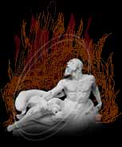

darkness
birth of Chadul
Silent Silent Night
Quench the holy light
Of thy torches bright
- William Blake, "Silent Silent Night"
Out of an obscene understanding of the elements was wrought a fifth element: darkness. From it, atrocious creatures were born. Some which died or vanished with only a lingering sense remaining, and others that the foolish summoner would wish that they had vanished. Their towns, too, would be eaten by the monstrocities.
Magic outside of the King's courts was generally prohibited thereafter. Kings, however, used the magic in their wars and in the imposition and sustenance of their luxury. The creatures became threats to neighboring enemies and internal opponents that challenged the throne.
The hideous creatures prospered under foolish reigns. These creatures were different from monsters known to the world. There was no orc or goblin that gripped the mind, and tore it like these beings did. The dubhaimid, as the were fearfully called, went through maddening motions, as if dancing to an obscene god. The dubhaim knew the secrets of life and death; which meant death for all mortal races. They created and stocked the underworld, land of terror and darkness. This was nothing like the final resting place, Grinneal of Hy-brasyl. Souls screamed without rest in the underworld of the dubhaimid.Perhaps they screamed too loudly, or perhaps the thoughts of the living were too strong. The eighth aeon of Temuair was known. Wise men described it by the being that was born: Chadul, the ruler of the third realm: the underworld. The wise returned to the worship of Danaan, goddess of the light.
A war rose up of light and darkness, the armies amassed under Danaan or Chadul. Danaan convinced the other beings aid to her, and Chadul was defeated in three days. Chadul was held at bay at the darkness. Not without casualties. The mortal world was ravaged by hail, earthquakes, floods, fire, and the fingers of the dubhaimid.
The beings realized what was done and wept for mortality. Mortal spirits wandered the land, and slipped into the darkness of Chadul's realm. Darkness spread.